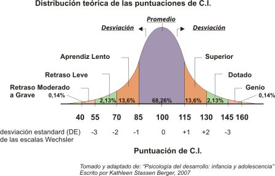

Introducción:
¿Qué es la anemia?
La anemia es una enfermedad, una alteración del funcionamiento normal del organismo, debido a una deficiencia en el transporte de oxígeno. Esta deficiencia es multifactorial;es decir, puede ser causada por varios motivos distintos más allá del más conocido: la deficiencia de hierro
Anemia ferropenica (por deficiencia de hierro):
Ocurre por la falta de hierro, por lo tanto, no tiene la capacidad suficiente para producir hemoglobina, afectando en el tamaño de las células rojas de la sangre.Tanto niños como mujeres embarazadas son los más susceptibles a tener la enfermedad ; Las mujeres embarazadas tienen el riesgo al estar en esta etapa , ya que requieren de mayor cantidad de hierro .
- Los músculos (aprox 10%).
- Las enzimas y neurotransmisores (aprox 3%) rol en circuitos aprendizaje.
- Los depósitos como la ferritina (aprox de 12 a 25%) en hígado y médula ósea.
El nivel de absorción del hierro varía en función al tipo de alimento (entre 1% y 50%) y en función a los depósitos de hierro en el organismo. Recientemente, investigadores han descubierto una hormona llamada hepcidina, producida por el hígado que cumple la función de regular la absorción hierro en el organismo, a través de un mecanismo negativo (es decir: la liberación)
Anemia por deficiencia de vitaminas B12:
Este tipo de anemia se caracteriza por un aumento en el tamaño de los glóbulos rojos.
Al tener esta deficiencia le cuesta más al cuerpo absorber las células rojas de la sangre, además las células deficientes tienen a morir mucho más rápido que las células que están en buen estado.
Las personas de edades más avanzadas son más propensos a este tipo de anemia, para eso la mejor manera de evítalo es consumir alimentos que contengan vitamina B12 como el huevo, la carne, los mariscos y lácteos
¿Cómo se diagnostica?
La anemia se diagnostica mediante un análisis de sangre, con los valores de hemoglobina, hematocrito y recuento total de glóbulos rojos.
¿Cual es la incidencia?
La anemia es una carencia que a nivel nacional afecta a cuatro de cada diez niñas y niños menores de tres años de edad (44,4%), es más frecuente en el área rural (52,6%) que en el área urbana (41,4%), en el primer semestre 2017.
Debido a sus efectos sobre la salud humana: la pérdida de potencial cognitivo (inteligencia) y la menor oxigenación del organismo, que trae consigo la debilidad muscular, fatiga mental y física y propensiones a otras enfermedades, la anemia afecta tanto en presente como futuro a la economía. En niveles agregados, países pueden sufrir las consecuencias económicas de prevalencias elevadas de este mal.
De acuerdo con el INEI, la tasa de morbilidad ha disminuido con el avance de los años, a partir específicamente del año 1992. No obstante, el grupo Niñez es el que todavía presenta un porcentaje alto en comparación a los demás.(1).
Cuantificar el efecto
El hierro tiene como función principal el transporte de oxígeno y su almacenamiento. Para los autores Haas y Brownlie (2001), la importancia química del hierro en el organismo radica en su papel en la producción de energía; por otro lado, Beard (2001) proporciona evidencia de la importancia de este elemento en el buen funcionamiento del sistema inmune, del sistema nervioso y también de la producción de energía y el metabolismo. Su deficiencia, por tanto, también afecta el desarrollo cognitivo de los niños, diversos autores muestran que la anemia provoca deficiencias irreversibles en el desarrollo cognitivo de los niños.

En primer lugar el costo por pérdida cognitiva es una suma de efectos provocados por la anemia directamente a los niños. Se calcula que la anemia produce una reducción del 4% del salario debido a este efecto. Se cuantifica este costo estimando el efecto en el CI provocado por la anemia (una reducción de media desviación estándar al promedio) y multiplicando por la diferencia en remuneraciones asociada estadísticamente a un menor coeficiente intelectual.
Debido
En segundo lugar también se encuentra el costo por pérdida de escolaridad: Se estima que los niños con anemia pierden 0.22 años de escolaridad. Según Yamada y Castro, el retorno en perú por un año más de educación es 5%. Asimismo a este cálculo debe sumarse el costo incurrido por el estado en años extra de escolaridad a causa de la repitencia en niños anémicos y a esto sumársele el costo de oportunidad por los años extra de estudio: es decir, el dinero que no pudo ganar el niño trabajando por estudiar esos años extra: salario estimado*años de repitencia
En tercer lugar, el costo por pérdida de productividad para los adultos que actualmente padecen anemia a causa de la anemia ha sido estimado en China e Indonesia por estudios independientes, donde se estima una disminución de alrededor de 17% comparándolos con empleados no anémicos que recibían suplementos de hierro. Esto debido a que la anemia disminuye la producción de energía, al limitar el suministro de oxígeno al cuerpo. Asimismo se ha estudiado su efecto negativo en actividades aeróbicas intensas, pues los músculos requieren oxígeno para realizarlas, esto disminuye la productividad en actividades físicas
Estos factores en el PIB per cápita sumados y multiplicados por la población actual da un efecto total de 2165 millones de soles al año.
Comparando el efecto
El PBI es importante para la economía de los países, debido a que señala cuánto es el nivel de bienestar de la población. Por lo tanto, se ha utilizado a dos países de la región, Ecuador y Colombia, como referentes para compararlos con la situación de la anemia en el Perú. Esto debido a que son países miembros de la comunidad andina y por los valores similares del PBI per cápita de estos países (ingreso promedio)
Así como en el caso peruano, Ecuador presenta las siguientes causas de la anemia por deficiencia de micronutrientes: inadecuada ingesta de alimentos, baja biodisponibilidad de alimentos y la presencia de infecciones asociadas. En el año 2007, se registraron que el 59% de niños y el 64.4% de niñas menores de cinco años han padecido de deficiencia de estos, incluido hierro, vitamina A, zinc y ácido fólico; mientras que en Perú, durante ese periodo, la misma población estaba en un 56%.
En el caso de este país, se ha reconocido la necesidad de promover cambios en los hábitos alimenticios, fortificación de ciertos alimentos de consumo común, uso de suplementos y cuidado en determinantes de la salud como desparasitación o la lactancia materna.
Otro país con problemas con los índices de anemia al igual que el Perú se pude mencionar el caso de Colombia ; la prevalencia de anemia según la OMS se encuentra en 27,7% siendo los más afectados los niños en etapa preescolar (47%), mujeres embarazadas y en edad reproductiva.Al igual que el Perú existen pocos estudios acerca de la anemia en escolares y de los que prevalecen se encuentran mayor número de registros de anemia ferropénica(20).Por lo general se asocia con situaciones de pobreza y hacinamiento.
En etapa escolar que sufren de anemia consiguen puntajes más bajos que sus contrapartes resultando en menos de 5 puntos de diferencia.